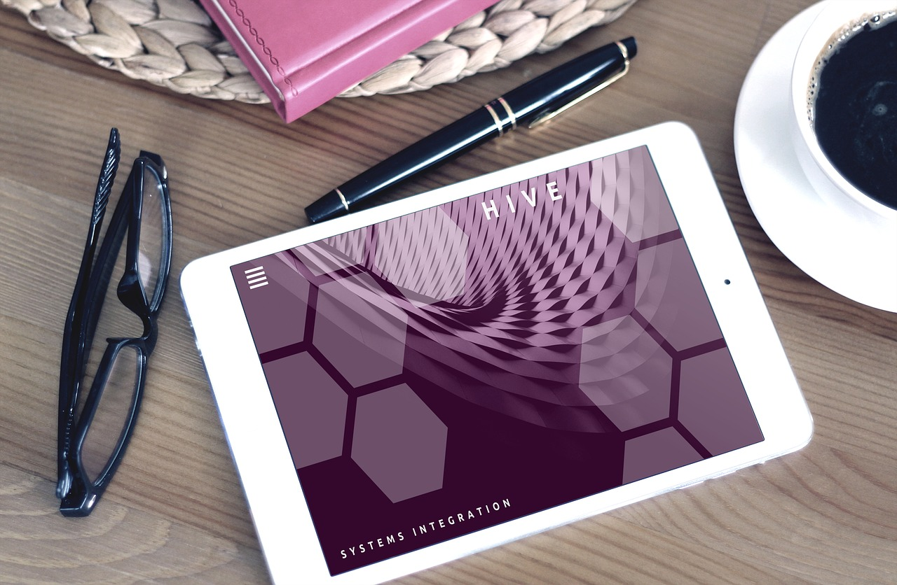

Today, I’ll talk about how to build the best design team, who does not only focus on being user experience competent, but also a team that is well rounded.
The creation of in-house teams, responsible for user experience, are becoming more and more popular in companies.
In making these recommendations, we will examine six of the key roles that has to be present on the user experience team.
1 - Content Strategist
This role is a recent emergence in the UX space.
Content strategy allows for usable content to be created, published and governed. Something that is important to remember is that content does not only mean
text; the stream of what is called alternative media and content channels, like social, only highlights the necessity to have this content strategist role on the design team.
On most teams, this role also includes that of the information architect and search engine optimization (SEO).
Typical outputs from the content strategist are:
- An editorial calendar;
- An editorial process and governance;
- A guide on the content’s tone of voice;
- Evaluation of the content and an audit thereof;
- Writing templates;
- Evaluation of the content, including policies, information architecture and taxonomies;
- The content itself and strategy.
In projects where SEO is of prime concern, that content strategist will have to implement the SEO plan.
This role, also, is sometimes separate from the user experience team as it deals with guiding and commanding an editorial team. It is important to note that content creation
leads to the success of a website, either as an equal aspect to or a more important one than visual design and interaction.
The background of people in this role will be an editorial department, where the person was part of the editorial team on a content-heavy website, publishing or media.
The role will also face changes in the future, and the content strategic would need to be even more skilled in content other than copy. There are more content channels being
created, too, so the Internet of Things (IoT), amongst others, brings with it the demand to create and manage content that can be used across various types of channels.
One thing is important to remember: a content strategist and a content producer is not one and the same; a content strategist is rather someone who facilitates the production
of content and this requires autonomy, which will lead to success.
2 - Visual Designer
Image source: https://pixabay.com/photos/web-design-website-design-web-mockup-1953129/
This role is very important in order to build the best design team.
Also called graphic designers, visual designers are responsible for choosing and ordering elements, like images, colors, symbols and typography, to express a message to people.
Over the past few years, with the advancement of mobile design, increased browser capabilities and responsive design, the visual designer role has changed.
An absolute must is that these designers are creative and able to create solutions.
A graphic designer these days has to create visual components and systems that, together, are dynamic in nature. This has caused the gap between the multifaceted designer,
who is able to work on screen and print, and a designer who is specialist in nature — they work on mobile or web designs and are well acquainted with visual design that is
interactive for the user.
Lately, there has also been a development in which these designers undertake a front-end developer role; however, this happens mostly when the interaction on the project
isn’t heavy and where JavaScript is less important than cascading style sheets (CSS).
The most common outputs from the visual or graphic designer are:
- Design composition and rules;
- Grid systems;
- Iconography;
- Style guides and tiles;
- mood boards;
- Typography.
It is key to recruit visual designers that have a strong interaction focus; whether they are self-taught or studied design.
Moreover, the person who fulfills this role needs to be able to work with the tools and methods that are utilized in the execution of front-end developers,
particularly when responsive techniques and CSS3 are involved.
Graphic designers need to be more than capable to design systems on screens that are static. For example dealing with microinteraction will be a key skill to have.
3 - UX Researcher

Image Source: https://www.afmc.af.mil/News/Article-Display/Article/1752153/ics-innovation-lab-aids-engineers-in-infrastructure-management/
This role is responsible for collecting insights into the user, as the user’s needs need to be detailed. As the project progresses, user testing, including other user-orientated
activities that tests design, content and level of interaction, will be done by the user researcher.
The user could be customers (new or existing), employees, partner or supplier (B2B), or a visitor to a website
As the user researcher has become more of its own role, so has it grown with popularity.
Not only are qualitative techniques used, but quantitative ones as well. The latter includes Web Analytics, A/B testing, advanced surveying and eye tracking.
As such, user researchers need to be able to work with statistics. On a big user experience team, the capacity is there to have some people dedicated for working with
data that is quantitative in nature while others can work with qualitative data.
While some companies do not want user researchers who focus solely on user needs, there is a case to be made that companies would want designers that have a
background in researching user needs.
The reason for this is that information can be lost when the data is handed over from the researcher to the designer, and the research is about both inspiration and insight.
Thus, these companies need to make sure that all the members on the design team are capable enough in user research.
The typical outputs from user research are:
- User stories and requirements;
- Service blueprints;
- Customer journey maps;
- Mental models as well as personas.
4 - FrontEnd Developer
Image Source: http://www.thebluediamondgallery.com/typewriter/d/developer.html
In the design team, this role is the only one touching the code.
Specializations of front-end developers include CSS, HTML and the client side of JavaScript.
The person in this role should create aspects of the solution that is user-oriented by using the code that is implemented in the browsers of the user.
The skill set of a front-end developer changes all the time.
This is due to the progress of browsers as well as mobile devices and the fact that the quality of the expectations of the user is continuously growing. When the web first
started, a front-end developer only needed to be skilled in HTML; nowadays, they need to know JavaScript, HTML5, CSS3, together with working with various frameworks
and large codebases.
Such changes will likely continue at an even faster pace in the future; as such, front-end developers require a strong desire to keep up to date with the latest developments in
their fields as well as an eagerness to learn.
The outputs of front-end developers are:
- HTML code;
- JavaScript code;
- CSS architecture.
If the company has an UX and development team, the technical UX designer will fill the cooperative role. Furthermore, depending on the needs of the project (i.e. big
JavaScript applications and codebases), you should take note that the front-end developer role demands a structured approach and not just knowledge of JavaScript.
5 - Interaction Designer
The interaction designer is responsible for creating and changing things that are digital so that people can use it. It deals more with the behavior of these digital things
and the look of it.
Furthermore, the effort for interaction designers focuses on the flow and sequence together with the layout and form.
Candidates who are purely interaction designers are not common; most often, it is the front-end programmers or visual designers that possess these skills.
Outputs that these designers deliver are:
- Wireframes;
- Site structures;
- Concept descriptions;
- Desired system behaviour descriptions.
Strong communication skills must be looked out for as the deliverables are interconnected with the final project delivery. Especially in agile projects does this role enable
both communication and production.
If you want to hire an Interaction Designer just keep in mind that you need someone with, at least, 2 years of experience in this role. And also it is very important that an
Interaction Designer have both UX and UI skills.
6 - UX Lead
As the role name suggests, the experience lead supplies that leadership aspect that the design team needs.
The team needs a dedicated leader who can ensure that the team moves in the right direction.
Unlike all the other roles, this one has no direct outputs other than the end product. In order to succeed in the vision of the project and get to the end result, the
experience lead role may require a lot of communication with the team, facilitation and even decision making.
The experience lead should have enough skills and experience in order to fill the other roles as well (or some of them), so the person would not be solely responsible for
leading the team.
One skill is very important to have: a good predisposition for business, as it is the spokesperson for the team in relation to the team’s relationship with the
leaders of the company. Mentoring is another nice to have skill.
Furthermore, the line becomes obscured between user and customer experience with regard to the experience lead.
Conclusions – How to build the best Design Team
In order to build the best design team, companies need to know the duties and responsibilities of these professionals in order to put hiring and staffing plans into
practice. Projects may require different needs and roles, so you need to make sure your team is aligned with those needs.
It is important to have a team whose members have more than one skill. Indeed, create a team with overlapping competencies will ensure that the best UX is
delivered for the user.
As the roles on a user experience team are generally not clear or well understood, challenges result when these members are recruited and hired.
Furthermore, since every project is different and needs are not the same, together with UX roles that are not defined, it is virtually impossible to make sure
that the results needed are delivered.
In this article, I identified six of the key roles that has to be present on the design team.
- Content Strategist
- Visual Designer
- User Researcher
- Front-End Developer
- Interaction Designer
- UX Lead
It is important to note that it isn’t necessary to have 6 people on the design team, but the people on the team, whether there are 7 or 3, need to be able to carry
out all of these roles. In order to have a team that fulfills all 6 roles, make use of the descriptions below.
These are merely a guide for you to know what to look for and also who to choose to fulfill all the roles.